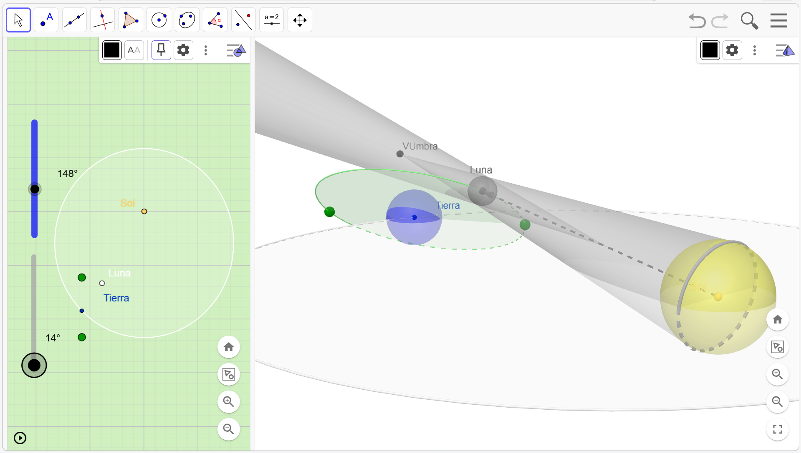

EXPLORACIÓN DE LA CAPA 3 DEL MODELO:
En la Capa 3 activa los elementos: ConoPenumbra, ConoUmbra, VUmbra y u1.

Al activar las sombras, verás cómo la Luna se convierte en una “barrera” para la luz del Sol. Fíjate en que la Luna no proyecta una sola sombra, sino dos zonas muy distintas:
• Umbra: Es el cono central, oscuro y estrecho.
• Penumbra: Es la zona gris más clara y mucho más amplia que rodea a la umbra.
Teniendo esto en cuenta intenta realizar o responder las siguientes cuestiones:
1. Mueve los deslizadores para que la sombra de la Luna roce la Tierra. Intenta que solo la zona gris clara (penumbra) toque nuestro planeta. En ese caso, nadie en la Tierra vería el eclipse total, ¡todos verían un “mordisco” en el Sol!
Si solo estás dentro del cono de Penumbra, en el máximo del eclipse verás un Eclipse Parcial.
2. Mira el tamaño de la penumbra comparado con la umbra. ¿Por qué crees que es mucho más común ver un eclipse parcial en tu ciudad que uno total?
Si también estás dentro del cono de Umbra, en el máximo del eclipse verás un Eclipse Total.